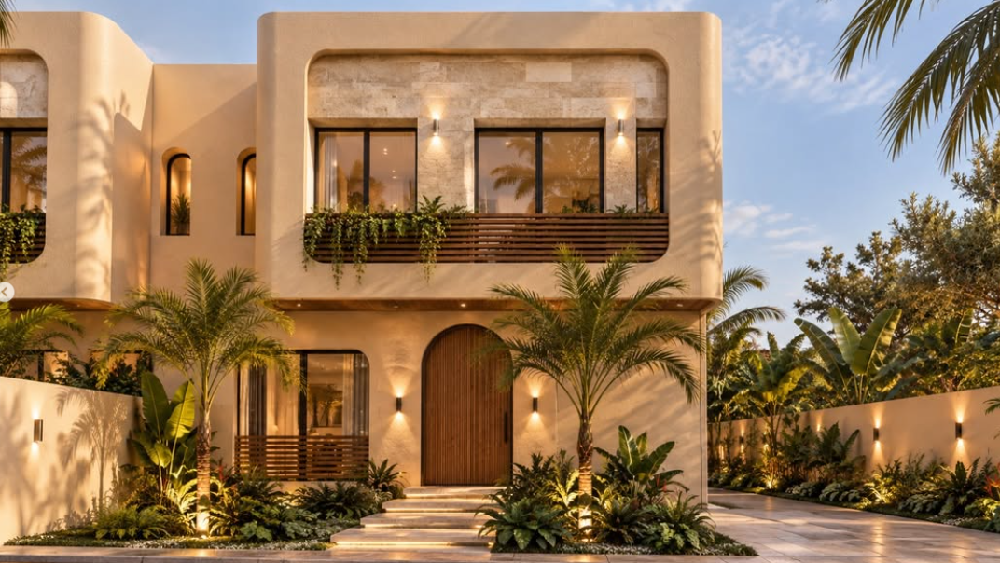
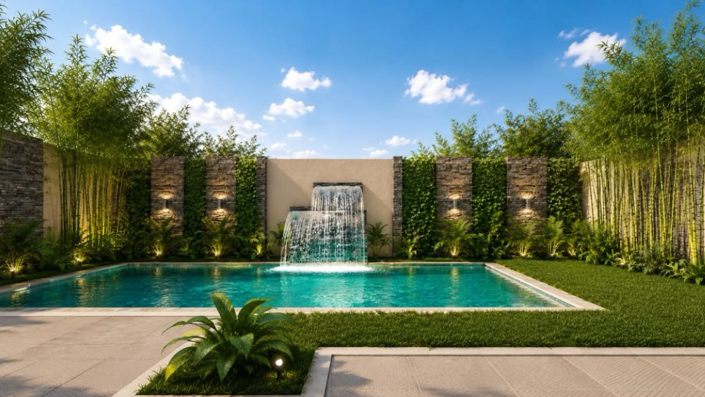
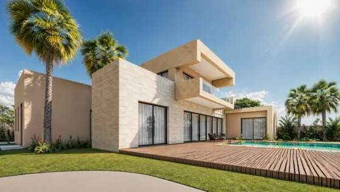

ARCHITECTURE & SENSIBILITÉ
01 — LE REGARDPENSER LES LIEUX. RÉVÉLER L’ESSENTIEL.
Des espaces qui se vivent, entre matière, lumière et émotion.



ARCHITECTURE
La force des lignes.
01 / 03
Perspectives de projets · Sélection visuelle
DÉCOUVRIR LE REGARDDES LIEUX. UNE ÉMOTION.
01 /
UNE SIGNATURE
UNE SENSIBILITÉ
Chaque lieu commence
par une intention.
Architecture, urbanisme et design intérieur.
Un regard sur les espaces, depuis Marrakech.
02 / UNE SÉLECTION DE PERSPECTIVES
La matière
prend vie.
Des lignes à la lumière,
explorer les espaces autrement.
ARCHITECTURE & ESPACESFAITES DÉFILER POUR EXPLORER ↓
Perspectives de projets · Intitulés descriptifs